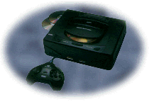

Sega Saturn

In May 1995, Sega decided to release their first true 32-bit console. The
Sega Saturn had initially been scheduled for a release in September, but
Sega decided to get a jump on the market. Initially costing $350 without
a game, the Saturn also reduced its price upon the release of the Nintendo
64 and did Sony one better; Sega decided to bundle three old Saturn games
with the system.
As with most video game systems, the Saturn has a territorial lockout
preventing import games from being played on a domestic system. And once
again, the video game populace have found a way around this lockout. A
switch can be installed to allow your Saturn to play US or Japanese games.
A more
complete description of the process is available.
Back to Main Menu
Anime Video Game Resource Center © 1998 by Luis A. Cruz